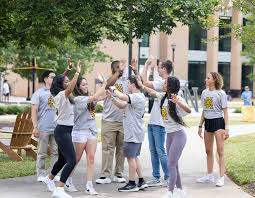

Campus Spotlight: Sustainability Initiatives Gain Momentum
As the new academic year kicks off, the university’s commitment to sustainability is shining brighter than ever. This month, students gathered at the annual EcoFair, showcasing innovative projects aimed at reducing campus waste and promoting renewable energy. The event featured workshops on sustainable living and a panel discussion with local environmental leaders, emphasizing the importance of student involvement in ecological advocacy. "We want to empower our peers to take action," said Sarah Thompson, president of the Green Campus Coalition. With plans for a campus-wide recycling program and the installation of solar panels on several buildings, this year's initiatives aim to foster a culture of sustainability that resonates beyond the classroom.

A Call to Action: Get Involved!
As we embark on another academic year, it’s crucial to remember the power of community engagement. Whether through clubs, volunteer opportunities, or campus events, getting involved enriches not just your college experience but also the lives of those around you. At KSU, there are countless ways to make an impact. Take a moment to explore the various organizations on campus, attend events, and meet new people. Together, we can create a vibrant and supportive community.
